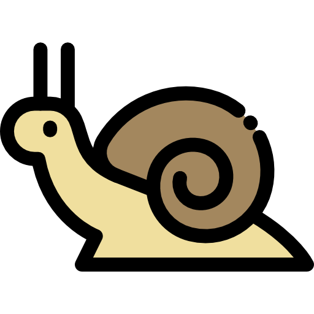
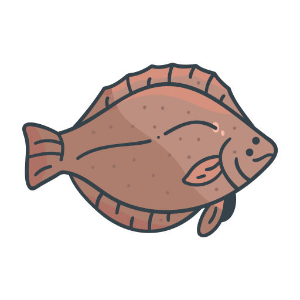
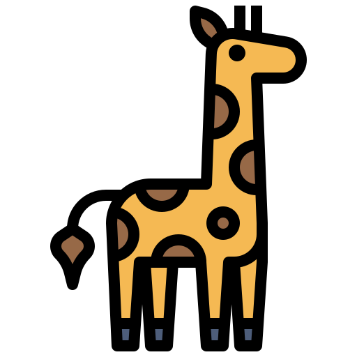
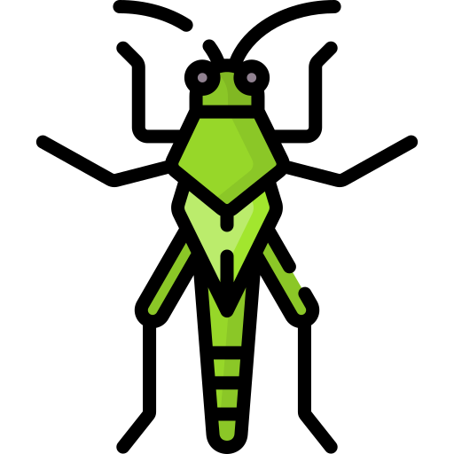

ÓRGÃOS SITUADOS NO LUGAR ERRADO
CARACÓIS defecam em suas próprias cabeças
|  | Uma característica particular dos caracóis é que durante sua formação, a concha calcária sofre uma distorção helicoidal, girando para abrigar seu corpo e permitir que a cabeça possa ser puxada para dentro do manto de proteção, evidentemente para se proteger de predadores. Acontece que, conforme gira durante sua fase larval, seu trato digestivo juntamente com o resto do visceral também são submetidos a torção, em torno de 180º, de modo que o ânus do animal finda localizado acima da própria cabeça. |
|---|
Olhos do LINGUADO precisam migrar
| Na fase adulta, os peixes linguados são indivíduos demersais estritos, vivendo camuflados encostados ao substrato dos fundos marinhos como forma de proteção contra os predadores e como estratégia de caça. Como o linguado descende de peixes simétricos, ao eclodir, a morfologia típica dos peixes, com cabeça simétrica e um olho de cada lado do cérebro, é apresentada. No entanto, um dos olhos precisa migrar para o lado oposto da cabeça, num processo de metamorfose que ocorre entre as fases larval e juvenil, para que na fase adulta ele não fique "raspando" no substrato marinho ou olhando para a areia. |  |
|---|
A bolsa do COALA abre-se para baixo
 |
O coala é um marsupial arborícola noturno, com até 85 cm de comprimento, que passa seus dias agarrado a troncos de árvores e que possui o marsúpio que se abre para baixo, em vez de para cima, como a dos cangurus. A razão isso é um legado da história. Os coalas descendem de um ancestral parecido com o vombate. Segundo Williams (2006), os coalas evoluíram de marsupiais escavadores como o vombate, que escavavam ninhos subterrâneos, a bolsa de seus ancestrais abrem-se para trás como resultado de proteção dos filhotes durante a escavação. A medida que os atuais coalas evoluíram, essa característica manteve-se como estrutura vestigial. |
|---|
Nervo laríngeo da GIRAFA gasta 4,5 metros
| O nervo laríngeo da girafa é um nervo craniano que parte diretamente do seu cérebro, onde um de seus ramos parte de cada lado do pescoço e se dirige à laringe. Uma parte chega à laringe diretamente, mas outra parte chega a ela por um caminho bem longo, ele se dirige para “baixo”, para dentro do tórax, caminha até o coração, dá a volta em uma de suas artérias e volta para cima, até atingir a laringe. O nervo laríngeo é um exemplo bizarro, pois como a aorta da girafa se encontra no tórax, e o tórax encontra-se muito distante do crânio, o nervo laríngeo “caminha” 4,5 metros em uma girafa adulta, quatro metros e meio, para chegar a uma posição a centímetros da origem do nervo. Segundo Wolf-Ekkehard Lönnig, o nervo maior chamado de nervo vago desce para enervar vários órgãos e que, na verdade, o nervo laríngeo não começa como um nervo separado que parte do cérebro, mas como uma ramificação saindo do nervo vago. Ou seja, o nervo laríngeo se separa do nervo vago perto dos grandes vasos que saem do coração, dando um loop e voltando para a laringe. No entanto, esta ramificação poderia partir do nervo vago logo no início do percurso, mas essa posição no local de ramificação está respeitando a história evolutiva herdada dos ancestrais dos tetrápodes. |  |
|---|
Nervo de voo dos GAFANHOTOS africanos
|  | No gafanhoto africano, embora as asas estejam no tórax, as células nervosas que se conectam às asas se originam no abdômen. Essa estranha "conexão" é o resultado dos nervos do abdômen sendo cooptados para uso durante o voo. Esse monumento à ineficiência é explicável considerando um processo não-direcionado como a evolução e não por uma causa inteligente, já que existem rotas alternativas pelas quais os nervos de voo percorriam o cordão nervoso ventral, passando pelo alvo e voltando através do organismo até onde são necessários. Este longo caminho faz usar mais materiais do que o necessário. |
|---|
COGUMELOS com lamelas do lado de dentro
| Nos cogumelos convencionais, as lamelas são utilizadas como meio de dispersão de esporos. Nos cogumelos da espécie Clavogaster virescens que assumiram uma forma gasteróide ao evoluir, o esporocarpo nunca se abre para formar o chapéu (píleo) e as lamelas se mantiveram dentro do corpo de frutificação. Com as lamelas do lado interno, os fungos não se abrem para que seus esporos se dispersem no ar. Os esporos então são formados dentro de corpos de frutificação e impedidos de serem expelidos com força do basídio, o que faz com que sejam dependentes de animais como roedores ou insetos para distribuir seus esporos. |  |
|---|